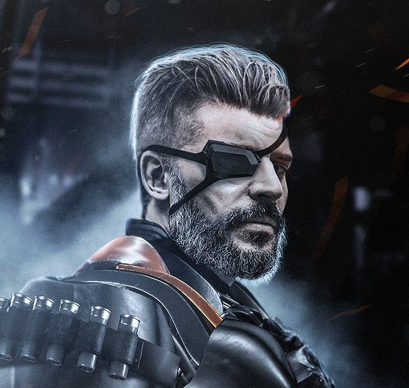
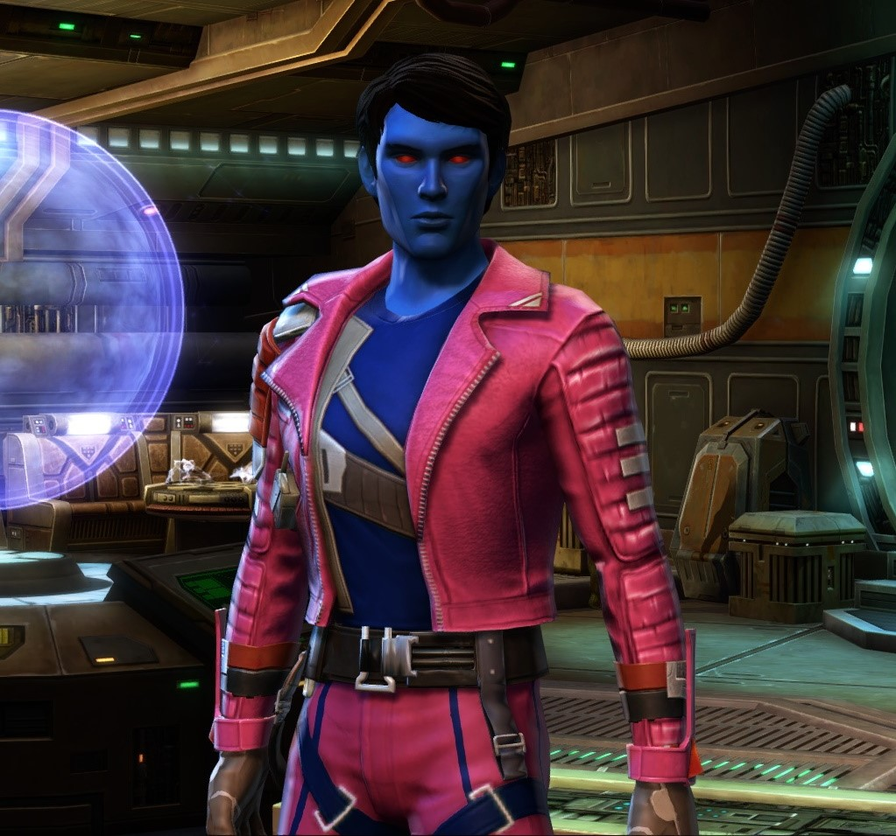

Drez Magar
Drez Magar
Philippe
Tout le monde a des projets. Simon, fortement intoxiqué, a le flash du siècle. Un mort pourrait nuire au rêve de Luc et Virginie se demande comment se débarrasser d'un corps.

Zoq Astran
Zoq Astran
David
Thomas rencontre son fantasme de jeunesse, alors que Simon veut retrouver la sienne. Marco espère avoir une deuxième chance comme acteur pendant que Lydia soupçonne Antoine d'avoir une double vie.

Zeerask
Raphaël
Tout le monde a peur. Pour Florence, ce sont les monstres. Marie-Ève c'est ce qu'elle trouve dans ses draps. Thomas a peur d'être un salaud et Lydia d'avoir tué Antoine.

Jaer
NPC
Tout le monde a peur. Pour Florence, ce sont les monstres. Marie-Ève c'est ce qu'elle trouve dans ses draps. Thomas a peur d'être un salaud et Lydia d'avoir tué Antoine.
T-57
NPC
Tout le monde a peur. Pour Florence, ce sont les monstres. Marie-Ève c'est ce qu'elle trouve dans ses draps. Thomas a peur d'être un salaud et Lydia d'avoir tué Antoine.
Chapitres

À la découverte de l'inconnue
C’est aux abords des régions inconnues, plus précisément dans la fameuse station TAL-TAL, que nos trois héros se retrouvent, afin de trouver un emploi auprès de la corporation transgalactique Unknown Citizen. Pour donner suite à une entrée sans problème dans la zone républicaine et une identification auprès de l’unité d’accueil de la corporation, les héros ont reçu leur première mission de niveau 1 (sur 5), leur demandant de récupérer une personne sur une planète inconnue (qui s’avèrera être un membre de la corporation de niveau 5, chargé de ramener une relique à Mr ODDS). Comme compagnon d’expédition, ils ont eu le luxe d’avoir le très enthousiaste Jaer/Jair, qui est de niveau 3 et agit à titre de pilote, tout comme de compagnon, ainsi que le prestigieux T-57, unité astromech respectant les cultures de la région, mais surtout, ayant le plus grand enthousiasme de la galaxie. Par suite de cette rencontre, ils se sont rendus sur la planète, qui est un désert qui semble peu habité (sauf par des gros chats des sables apparemment). Les compagnons vont découvrir un temple sketch et ancien, ainsi que leur target, non loin du vaisseau, qui dit avoir été attaqué par des personnes étranges. Leur quête se termine presque lorsqu’ils accompagnent (KEL DURAN) dans la récupération de la relique, POUR SE FAIRE EMBUSQUER PAR LES BIZARRES (suspense).
Faits notables : Phil a des ptsd et pense que les Chiss veulent le tuer. David est clueless avec pleins d’éléments de la société républicaine et est un peu rude (sauf avec t-51). Le personnage de Raph est un chien. Il est aussi fort aimable.

Le temple du mystère
C’est par des tirs de blasters que les mystérieux humanoïdes de la dernière fois accueillirent nos aventuriers au moment où ceux-ci tentaient d’évacuer KEL DURAN, le level 5 contracteur de UNKNOWN CITIZEN porté disparu. Le groupe fut engagé dans une brève escarmouche durant laquelle KEL a pretty much juste tenté de fuir le temple le plus rapidement possible. Finalement, le groupe fut victorieux même si certains passèrent proche d’y laisser leur peau (KEL y compris).
Ébranlé par cet épisode, le groupe quitta le temple sans attendre plus longtemps. En sortant, les aventuriers remarquèrent qu’une tempête s’était subitement déclaré sur leur position, rendant le retour au vaisseau une affaire non triviale n’eut été de l’expertise avancée de repérage de DREZ qui prit les devants et ramena le groupe jusqu’au tas de ferraille qui leur avait servi de transport. Juste avant d’arriver, le groupe fut cependant attaqué par un méchant tigre qui venait sûrement venger ses deux confrères trépassé un peu plus tôt. Ce fut l’occasion pour le brave T-57 de montrer qu’il savait se défendre dans un combat en électrocutant le tigre, coup de grâce qui envoya ce dernier rejoindre ses ancêtres au valhalla des tigres.
Au moment de quitter la planète, les mystérieux gardiens du temple firent signe qu’ils n’avaient pas dit leur dernier mot alors que deux chasseurs prirent en chasse le X-15 de nos héros. Les poursuivants présentèrent un considérable challenge, mais ZOQ ASTRAN montra toutes ses aptitudes de tirs en touchant les chasseurs à de nombreuses reprises et en explosant même un des deux. Au moment où la situation devenait critique, T-57 enclencha l’hyperspace du vaisseau, sauvant le groupe d’une mort certaine.
Pendant le voyage de retour, KEL DURAN expliqua ce qu’il savait sur la mission qui lui avait été confiée et sur l’étrange artéfact qu’on l’avait fait récupérer. Même malgré de sérieux mal de tête, personne n’arriva à proposer une théorie intéressante quant à la nature de l’artéfact. Cet objet et son importance devraient donc rester une mystère pour l’instant...
De retour sur TAL-TAL, nos héros se frappèrent à la dûre réalité capitaliste de cette région de la galaxie au moment où ils réalisèrent que les gains de leur aventure n’étaient même pas suffisants pour réparer les dommages de leur vaisseau. Plusieurs solutions furent proposés à ce problème, mais la plus excitante d’entre-elles a clairement été la participation à une grande partie de PAZAAK, le jeu officiel de la galaxie je pense. Peut-être que si nos héros jouent leurs cartes de la bonne manière, ils pourront sortir du tournoi riches et avec un peu de chance en un seul morceau.
À SUIVRE...
Le Pazaak et les attaques
La soirée a commencé sur le bord d’une table avec Drez qui arrive et explique qu’une soirée de Pazaak commence bientôt et que ce serait un moyen assez intéressant de faire de l’argent pour aider Jaer avec la réparation du vaisseau et juste faire de l’argent de poche pour la nouvelle vie dans le Unknown region. Les camarades retournent donc au vaisseau pour emprunter un deck de Pazaak quand un mécanicien de l’espace leur propose d’acheter T-57, la mascotte du groupe, pour une somme de 7000 crédits. Tous sont offusqués de cette offre et personne ne semble vouloir accepter. T-57 les remercies fortement et crache sur le mécanicien en lui roulant sur le pied.
Arriver à la partie de la Station TALTAL où nous pouvons jouer au Pazaak, nous apprenons que le coût d’entrer est de 300 crédits, mais que la récompense est doubler. Drez et Zoq pousse un peu notre ami l’homme chien Zeraask à faire la première partie, en ayant confiance qu’il pourra gagner haut la main. Malheureusement, que de malchance, il perd. Par contre, Nous sommes poussé à continuer et Drez prend le relais pour aller dans les mises hautes de 800 et 2000 crédits. La première partie se déroule trop facilement, une jeune fille de 19-20 ans voulait seulement rentrer chez elle et a misé sans connaître le jeu.. Une première victoire pour Drez. La deuxième partie contre un Capitaine de la République, Izio Taine, se déroule aussi facilement que la première. Une deuxième victoire pour Drez. Arrivé au niveau final, il devra affronter un Arconien pour tenter de gagner le gros lot. Cependant, il a compris que certains individus malfamé étaient venu pour lui. Il en glisse un mot à ses collègues et commence la dernière partie. Sachant qu’il allait gagner par tricherie des Gamoréens, il fait exprès de perdre en pensant pouvoir détourner l’attention.
La journée terminée et épuisé, ils retournent au vaisseau pour se faire accueillir par le huissier du clan Kakgar.. Une histoire pas encore finie avec Drez ? Who knows…
Le groupe est donc partie pour une nouvelle mission, trouver une boite noir d’un vaisseau détruit, ainsi qu’un bounty sur la planète de New-Canto!
La politique Chiss
Alors que notre héros national T-57 et son équipe de production ont a peine eu le temps de souffleur sur la perte de leurs multiples crédits républicains, ainsi que les petits problèmes de dettes de Drez, ils sont embarqués de nouveau dans l’A-VEN-TURE! En effet, pour aider Jair dans sa petite jobine, ils doivent se rendre dans l’ESPACE pour récupérer une boite noire. En suivant les feux du Gondor, euhh je veux dire le beacon du vaisseau, ils se retrouvent devant un vaisseau de transport Chiss qui ne fut point brisé par des lasers ou des canons à ION (suspense). Après avoir récupéré la bwète noire, ils se font aborder par une milice de l’ascendance Chiss, qui se termine relativement positivement avec une collaboration entre les deux groupes et un potentiel de travail conjoint dans le futur, si notre groupe d’aventurier désirait s’investir dans cette histoire prochainement…
Somme toute, ils ont les coordonnées de la tsite madame Chiss et ont réussi à récupérer l’argent pour la boite noire, comme les vrais vilains qu’ils sont, une fois arrivés sur New-Canto. On skip le bout avec la visite qui est bien nice mais ne fait que nous rappeler l’élitisme de la planète et le fait que c’est le robot le plus rude sur terre. FWD a notre arrivée, nous nous retrouvons avec trois filons potentiels d’exploration : la prime de Drez dans le LOWER CITY, qui nous demanderait peut être d’aller voir la république et ou les Chiss pour avoir de l’informations sur l’endroit, ainsi qu’une poursuite de l’investigation du vaisseau Chiss détruit, maintenant que nous avons les informations.
FINALEMENT, après avoir bond avec Jair, nous avons appris sur la planète de Méto (à ne pas confondre avec Métho et Méthodologie!) qui grief encore à propos de la destruction de la planète aux mains (on ne sait pas trop) des Mandaloriens), ainsi que la mort de son oncle. Dans tous les cas, ceci constitue un 3e filon d’exploration potentiel car on a quand même promis à Jair de l’aider, surtout vue que la République sert autant à quelque chose qu’un surveillant de couloir d’école secondaire. Pour cette quête, interroger des Chiss, ou potentiellement notre nouvel ami de la République qu’on a butté au Pazaak pourrait nous donner des pistes d’investigation.
QUE FERONT L’ÉQUIPE DE CAMÉRAMANS DE T-57 ?? SUSPENSE SUSPENSE ZOOM DE CAMÉRA
New-Canto
Dans le but de trouver la cible de la bounty, T-57 et ses acolytes font un arrêt au CHILLY POD PUB. À l’intérieur, le groupe rencontre le groupe de jeunes cool pilotes menée par LAURA KELL, une pilote très réputée en ville. Malheureusement, les aventuriers ne trouvent aucune trace de leur bounty même en étant très insistant avec le barman qui ne veut absoluement pas collaborer à cette affaire. La situation dégénère un peu et le barman invite le groupe à quitter l’établissement, ce qui est fait sans délais.
Après avoir check-in au QUIET LOWER HOTEL, le groupe se dirige maintenant vers L'AMBASSADE CHISS pour voir les opportunités de boulot. Après une longue et fougueuse conversation sur le passé et le futur de L'ASCENDANCE CHISS, ils acceptent d’aider avec une mission d’escorte dans les opérations minières.
Juste avant de partir pour le champ d'astéroïde, les aventuriers ont l’occasion de reparler avec LAURA KELL, qui participe également à la mission. Les deux groupes se lancent un défi amical que si il devait y avoir des combats spatiaux, le groupe avec le moins de kills doit payer la tournée aux vainqueurs au CHILLY POD PUB (même si le groupe est banni de l’établissement mais entk on verra ce qui arrive avec ça). Durant le voyage vers le champs d’astéroide, les compagnons ont aussi la chance d’en apprendre un peu plus les uns sur les autres. Ils écoutent notament l’histoire de JAIR qui a vu sa planète ravagée par un ennemi inconnu et duquel peu de ses concitoyens ont réussi à s’échapper.
À SUIVRE